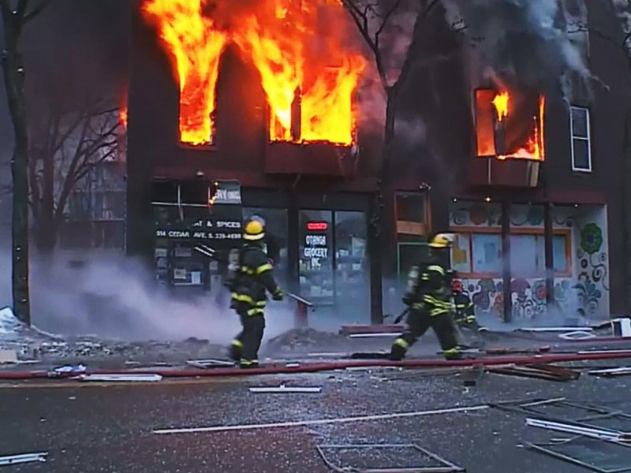
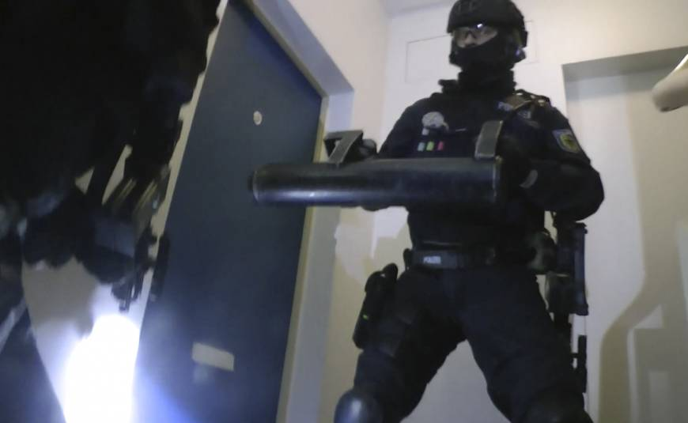

Incident report #1425: Filed by Jack Boyde At around 10 pm, on the 27 of November, numerous 911 calls were received in Oshawa, Ontario, a city east of Toronto. The calls described what was believed to be an explosion at an apartment complex on 1700 Lamont Ave. 5 minutes later, emergency services arrive at the building only to find plumes of smoke billowing out of the top floor windows.
An evacuation order was given to fire services and the premises were quickly cleared. Unfortunately, the fire alarm system experienced an electrical failure caused by poor maintenance of the wiring. Many residents were still trapped inside the burning building. Efforts were soon underway to battle the blaze and prevent the fire from spreading to other nearby structures. Lieutenant Michael Whitman on Truck 6 noticed an open window with an unusually low amount of smoke and heat radiation compared to its surroundings, and instructed his units to investigate first for survivors. About 3 hours into the blaze, first responders and backup tankers from the Pickering and Ajax regions subdued the flame, and rescue workers were cleared to enter the building to continue the search for survivors.

One of the entry teams investigating the room Lieutenant Whitman earlier mention reported that the door was bolted shut, so a ram was used and entry was forced in. What they discovered is what we believe to be a critical turning point into the inquiry of the "Circuit board Slicer", a serial killer that we have been investigating for over 5 months now. The room was appeared to be a self renovated bunker, all doors were double-bolted with bulletproof locks, the walls were coated in fireproof paint, which explained why there was minimal fire damage to the interior. Further inspection of the room revealed several large barrels, inside of which appeared to be corpses. A homicide team was immediately dispatched, covering their entry were members of the RCMP's Emergency Response Team, and members of Joint Task Force 2. The SWAT team spent the next hour clearing out the entire building, looking for other suspicious individuals and items. No other potentially harmful items were recovered, and the investigation continued.
Detectives Ricky and Jason Zhu, Andrew Yang, Christian Canlas, and Isaac Li were assigned the case, working alongside agents from the FBI from the US, and members of the RCMP. The first step was to disassemble a system unit recovered among the heaps of evidence recovered in order to inspect it's contents and to match the serial number to a potential suspect. Access their journal entry by clicking the link.
The FBI believe that the paper in James Cornell’s necklace held the password to his computer. The FBI entered the password “5h8smwp0bbxu1jwn8” and suprisinly it was the password to the computer. On the computer, the FBI found links to a major terrorist organization the “Circuit board Body” which James Cornell, aka the “Circuit board Slicer”, was a part of. The FBI also found future plans of bombings and of terrorist acts. The FBI is now continuing to investigate this organization and is developing countermeasures to this extremist group’s plans. One thing is for sure, the detectives played a major role in this investigation.